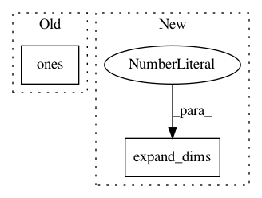

de35f42a16796d9aab141dd944d79b1d97cec350,grakel/kernels/random_walk.py,RandomWalk,pairwise_operation,#RandomWalk#Any#Any#,200
Before Change
elif self.kernel_type == "exponential":
return np.linalg.multi_dot((np.ones(s),
expm(self.lamda*XY).T,
np.ones(shape=(s))))
elif self.method_type == "fast":
// Spectral demoposition algorithm as presented in
After Change
qj_Pj, wj = Y
// calculate flanking factor
ff = np.expand_dims(np.kron(qi_Pi, qj_Pj), axis=0)
// calculate D based on the method
Dij = np.kron(wi, wj)
if self.p is not None:
In pattern: SUPERPATTERN
Frequency: 3
Non-data size: 2
Instances
Project Name: ysig/GraKeL
Commit Name: de35f42a16796d9aab141dd944d79b1d97cec350
Time: 2018-08-23
Author: y.siglidis@gmail.com
File Name: grakel/kernels/random_walk.py
Class Name: RandomWalk
Method Name: pairwise_operation
Project Name: GPflow/GPflow
Commit Name: 82779a785e66d6949cd2a66a68e57757ba2f6bf1
Time: 2016-01-14
Author: james.hensman@gmail.com
File Name: GPflow/conditionals.py
Class Name:
Method Name: gp_predict_whitened
Project Name: stellargraph/stellargraph
Commit Name: 145170ca9bbd89aa01d8a40841e3c039d3683af8
Time: 2019-06-03
Author: andrew.docherty@data61.csiro.au
File Name: stellargraph/layer/graph_attention.py
Class Name: GraphAttention
Method Name: call